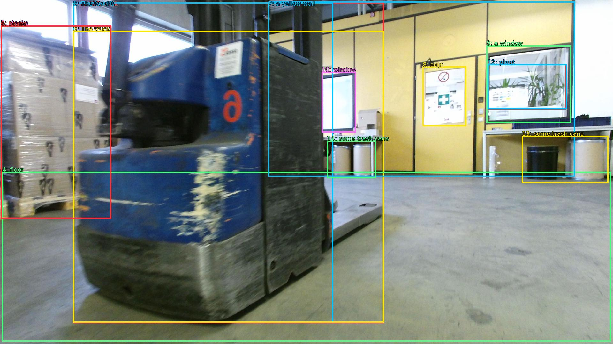

The image shows a blue forklift truck in a warehouse. The forklift is parked in the center of the image, with its front end facing towards the right side of the frame. It appears to be in good condition, with no visible damage or wear. The truck is parked on a concrete floor, and there are stacks of cardboard boxes on the left side. In the background, there is a yellow wall with a sign that reads "No Parking" and a window with a view of a plant. There are also some trash cans and other industrial equipment visible in the background.

Original · Caption raw · Grounding raw · Koordinate
Številke so lokalni ID regije. Dolge slikovne oznake so skrajšane; spodaj so celotne fraze. Napovedane regije se lahko prekrivajo ali opisujejo skupine.
| ID | Celotna fraza | bbox xyxy |
|---|---|---|
| 1 | forklift truck | [229.44000244140625, 7.020000457763672, 1202.8800048828125, 1014.6600341796875] |
| 2 | The forklift | [229.44000244140625, 7.020000457763672, 1043.52001953125, 1012.5000610351562] |
| 3 | The truck | [229.44000244140625, 96.66000366210938, 1202.8800048828125, 1012.5000610351562] |
| 4 | floor | [6.71999979019165, 539.4600219726562, 1913.2799072265625, 1072.9801025390625] |
| 5 | stacks | [2.879999876022339, 78.30000305175781, 348.47998046875, 687.4200439453125] |
| 6 | boxes | [2.879999876022339, 80.46000671386719, 348.47998046875, 686.3400268554688] |
| 7 | a yellow wall | [840.0, 4.860000133514404, 1800.0, 554.5800170898438] |
| 8 | sign | [1323.8399658203125, 208.98001098632812, 1460.159912109375, 396.9000244140625] |
| 9 | a window | [1523.52001953125, 142.02000427246094, 1788.47998046875, 385.02001953125] |
| 10 | window | [1007.0399780273438, 225.1800079345703, 1114.5599365234375, 415.260009765625] |
| 11 | view | [1527.3599853515625, 201.42001342773438, 1773.1199951171875, 343.9800109863281] |
| 12 | plant | [1527.3599853515625, 201.42001342773438, 1775.0399169921875, 342.9000244140625] |
| 13 | some trash cans | [1634.8800048828125, 426.0600280761719, 1905.5999755859375, 574.02001953125] |
| 14 | some trash cans | [1024.3199462890625, 441.1800231933594, 1177.919921875, 559.9800415039062] |